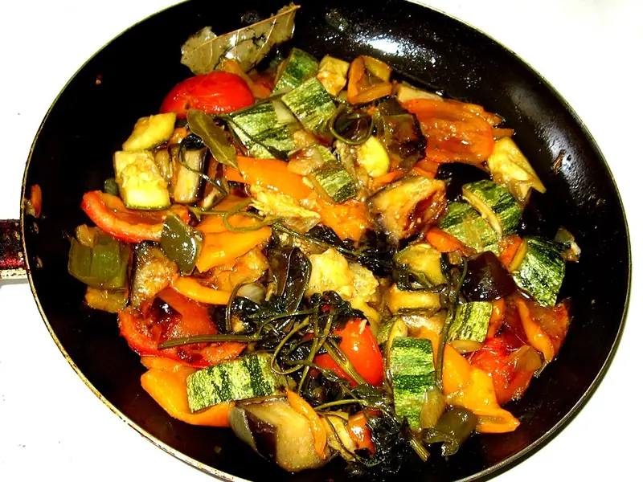

Фото: Marcus Guimarães, CC BY 2.0

Рататуй
Кружочки баклажана, кабачка и помидора, запечённые на томатной подушке
75 мин4 порц.186 ккал на порциюБ 4 · Ж 11 · У 19Европейская кухня
Продукты на 4 порц.
- Баклажан1 шт
- Кабачок1 шт
- Помидоры4 шт
- Перец болгарский1 шт
- Лук репчатый1 шт
- Чеснок3 зуб.
- Томаты в собственном соку0,5 шт
- Оливковое масло3 ст. л.
- Сушёные травы1 ч. л.
- Соль1 ч. л.
- Перец чёрный молотыйпо вкусу
- Базилик по желаниюпо вкусу
Как готовить
- Мелко нарежьте лук, перец и 2 зубчика чеснока. Обжарьте на 1 ст. л. масла на среднем огне 5 минут до мягкости.
- Добавьте томаты в собственном соку, посолите и тушите 5 минут. Выложите соус на дно формы.
- Нарежьте баклажан, кабачок и помидоры кружками толщиной 3-4 мм.
- Выложите кружки на соус по кругу, чередуя овощи и ставя их наклонно, как черепицу.
- Смешайте оставшееся масло с рубленым чесноком, травами, солью и перцем, полейте овощи.
- Накройте форму фольгой и запекайте при 180 °C (средний жар) 40 минут.
- Снимите фольгу и запекайте ещё 15 минут, пока края овощей не подрумянятся, а нож не будет входить легко.
Совет. Если баклажан горчит, посолите кружки на 15 минут и промокните салфеткой. Режьте все овощи одной толщины, тогда они пропекутся одновременно.